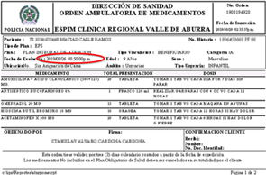

Puede estar intentando tener acceso a este sitio desde un explorador protegido en el servidor. Habilite los scripts y vuelva a cargar la página.
Preguntas Frecuentes
.
.
GENERALIDADES
¿A cuántas consultas en el año tengo derecho?
El usuario no tiene límites sobre el número de consultas al año, aunque, la Resolución 5261 de 1994, establece que de acuerdo con las frecuencias nacionales, un usuario consulta normalmente al médico general en promedio dos (2) veces por año.
¿Cuánto tiempo tengo para reclamar los medicamentos?
A partir de la fecha impresa en la fórmula tiene 72 horas para reclamarla

¿ Que debo hacer para solicitar la desafiliacion de un beneficiario ?
El beneficiario debe presentar una carta solicitando la desafiliacion del Subsistema de Salud de la Policía Nacional, recuerda que si es el titular quien solicita la desafiliación debe presentar además, copia de la sentencia de divorcio
¿ Puedo solicitar la desafiliación de mi hij@ menor de edad?
Recuerda que la Policía Nacional pertenece a un régimen especial exceptuado, por lo tanto los hijos menores de edad no pueden ser desafiliados.
¿Como puedo solicitar la copia de mi historia clínica ?
Debe solicitar un formato de solicitud de historia clínica en la fotocopiadora ubicada en el sótano de la Clínica Regional Valle De Aburrá, o descargarlo desde el siguiente
enlace
, diligenciarlo y radicarlo en la oficina de gestión documental ubicada en el primer piso, debe anexar fotocopia del documento de identidad.
Si la historia clínica es de un menor de edad solo puede reclamarla el padre o madre con registro civil del menor.
¿Cuáles son los horarios de visitas de los diferentes servicios?..
Tenga en cuenta que para el ingreso debe registrarse en la guardia, presentando su documento de identidad, allí le entregarán una identificación (escarapela), que lo acredita como visitante, el cual debe portar en un lugar visible durante su estancia en las instalaciones.
los horarios son los siguientes:
SERVICIO
HORARIO DE VISITAS
HOSPITALIZACION
Lunes a domingo de 14:00 a 18:00 horas
UCE
Lunes a domingo de 11:00 a 12:00 y de 16:00 a 17:00 horas
URGENCIAS
¿Qué es la atención inicial de urgencias?
Es la atención que se presta a un paciente con una urgencia para estabilizar sus signos vitales (respiración, latidos del corazón, tensión o presión arterial), hacerle un diagnóstico y determinar el destino (lugar al cual se debe llevar) con el fin de evitar la muerte o un daño mayor en su salud.
¿Qué es una atención médica prioritaria?
Es la que se brinda a un paciente que por sus condiciones de salud no pueden esperar una cita médica, pero en la cual no peligra su vida. En estos casos diríjase a la EPS.
¿Qué horario tiene el servicio de urgencias médicas en la Clínica Regional Valle de Aburrá?
El servicio de urgencias médicas funciona todos los días las 24 horas.
¿Qué horario tiene el servicio de urgencias odontológicas en la Clínica Regional Valle de Aburrá?
Lunes a viernes: 07:00 a 16:30 horas y los días sábados de 07:00 a 10:00 horas.
CALL CENTER
¿Donde se solicitan las citas de Crecimiento y Desarrollo?
Las citas de Crecimiento y Desarrollo se solicitan en el teléfono
3396600
ext 6883.
¿Dónde se solicitan las citas de Planificación Familiar?
Las citas de Planificacíon Familiar se solicitan en el teléfono
3396600
ext 6884.
¿Qué citas me generan comparendo?
No asistir a citas de medicina general y especialistas.
No Reclamar fórmulas de Transcripciones.
No asistir a citas de Medicina Laboral.
No asistir a citas de Fisioterapia
No asistir a las citas de Crecimiento y desarrollo.
¿Dónde puedo asistir a un comparendo?.
Puede asistir a los siguientes lugares, para recibir la charla educativa:
SEDE
HORARIO CHARLA
Clínica Regional Valle de Aburrá
Los días Jueves a las 14:00 horas, auditorio 4 piso
Dispensario de Bello
Los días martes 09:00 am. , auditorio 2 piso
¿Cuál es la línea habilitada para cancelar citas otorgadas en el Call Center?
Para cancelar las citas solicitadas en el Call Center puede hacerlo enviado un mensaje a la línea Whatssap
3023929666
, en los siguientes horarios:
Lunes a viernes: 07:00 a 17:00 horas y los días sábados de 07:00 a 12:00 horas.
¿Cuál es la línea habilitada para cancelar citas otorgadas en el ESPAB de Bello?
Para cancelar las citas solicitadas en el dispensario de Bello puede hacerlo enviado un mensaje a la línea WhatsApp
3506656774
, en los siguientes horarios: Lunes a viernes: 07:00 a 17:00 horas y los días sábados de 07:00 a 12:00 horas.
TRANSCRIPCIONES
¿Cuál es el procedimiento para transcribir una incapacidad?
Según la Directiva administrativa permanente 001 del 03 de mayo de 2019 en su literal 12 y 13. El personal policial dispone del mismo día o el día hábil siguiente a primera hora a partir de la fecha en que se emitió la incapacidad médica o licencia por maternidad por la red externa o red propia, para realizar el trámite en la oficina de transcripción y deberá acompañarse de la Epicrisis, evolución, historia clínica y certificado de incapacidad membreteado en original, una vez recibida la documentación completa por el funcionario de ventanilla y verificada por el medico transcriptor que tendrá 2 días hábiles para realizar la transcripción de la incapacidad medica previo agendamiento donde se citara al usuario para ser valorada su patología.
¿Cual es el procedimiento para transcribir un medicamento?
El Paciente deberá tramitar su fórmula medica ordenada por el médico tratante de la Red Externa o de la Clínica Regional del Valle de Aburrá, de lunes a viernes 06:00 am a 12:00m, y de 14:00 a 17:00 en la oficina de transcripciones.
¿Cual es el procedimiento para transcribir un medicamento no pos?
El paciente debe tener presente que para realizar el trámite es necesario tener formulas originales y vigentes, copia de historia clínica, y formato de la formula membreteada, formato de solicitud de justificación de medicamento no pos, documento de identidad, carnet y radicarlos en la oficina Referencia y Contrareferencia.